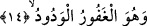

Bu isim koruma altındaki bir eşyanın nereye konulduğu unutulmuşsa hatırlanması için
tekrar tekrar okunursa ve özellikle bunun bir önceki âyeti olan “el-Mubdi’” kelimesi
eklenerek okunursa kişi eşyasını koyduğu yeri hatırlar.
14. O, çok bağışlayan ve çok sevendir.
“O” inkârına tevbe edeni ve îman edeni “çok bağışlayan” ayrıca küfür günahından
başka diğer günahlarına tevbe edeni ve dilerse tevbe etmeyeni de çok bağışlayan “ve”
kendisine itâat etmeyi seveni veya tevbe edeni “çok sevendir.” Nitekim aynı mânâ bir
başka âyet-i kerimede şu şekilde ifâde olunuyor: “Şunu iyi bilinki, Allah tevbe
edenleri de sever. Temizlenenleri de sever.” (Bakara 2/222) Bu, fazlın alâmetidir.
Adâletine bıraktığında seni yok eder, fazlı ve ihsanıyla da okşar ve yüce mertebelere
çıkarır.
Onun fazlı kederlere boğulmuş kimseleri okşamaktır
Onun adâleti zorbaların sinelerini yakmaktır.
Âyette yer alan “el-Vedud” kelimesi “feûl” kalıbında olup mânâsı -burada- “fâil”
şeklindedir. Çünkü mânânın fâil kalıbında olmasını cümlenin gelişi gerektirmektedir.
Sehl (rh.) “el-Vedûd” kalıbını şöyle açıklar: el-Vedûd demek kullarına tam nimet
vererek ve âfiyetlerini devam ettirerek sevimli olan demektir. Bu takdirde “Vedud”
kalıbı “fâil” mânâsında değil, “mef’ul” anlamında olur. Çünkü Sehl’in bu açıklamasına
göre seven o değil tam tersine o sâlih kullarının sevdiği olmuş olur. Kulun Allah
muhabbeti, O’na itâat ve emirlerine uygun davranması demektir. Veya kulun Allah
muhabbeti demek kulun ona ta’zimi, kalbinde onun heybetini duyması demektir.
Hakikatin esrârına ermiş olan âlimler görüş birliği hâlinde derler ki: Herhangi bir
karşılık beklentisi içinde olan her türlü muhabbet sakat bir sevgidir. Tam tersine sağlam
ve gerçek muhabbet bütün tamah ve istekleri aşmış, safiyane muhabbettir. Bir haberde
şöyle denir: “Herhangi bir karşılık beklemeksizin sâdece rablığa hakkını vermek
amacıyla bana ibâdet eden kimseyi ben severim.”
Büyüklerden birisi sevgi ifâde eden terimleri şu şekilde açıklar: “Aşk” iki ruhun
birbiriyle sarmaş-dolaş olmasıdır. “Hubb” ise bu sarmaş-dolaş hâlinin safiyane olması
durumudur. Sevgi anlamına gelen bir başka kelime olan “vüdd” ise sevginin sâbit
olması, kalpte yerleşmesi demektir. Bir başka terim olan “heva” ise sevginin kalbte ilk
doğduğu andır.
et-Te’vilâtü’n-Necmiyye’de aynı deyimler şöyle açıklanıyor: “el-Vedud” Allah
Teâlâ’nın kendisine yönelen kula, sevgiyle tecelli etmesi demektir. Bu tıpkı kudsi